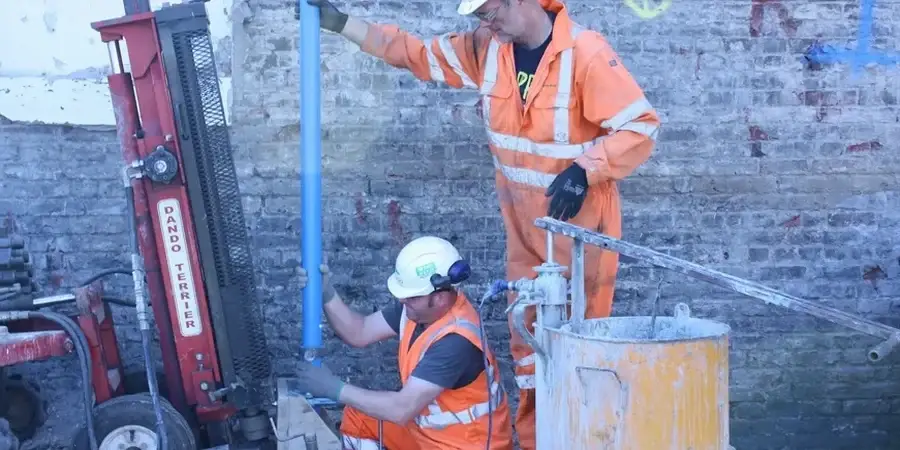

En nuestra oficina local en Marbella ofrecemos servicios completos de ingeniería geotécnica, desde la caracterización del terreno hasta el diseño de cimentaciones y el monitoreo de excavaciones. Trabajamos con equipos calibrados y personal con experiencia regional consolidada para garantizar estudios de subsuelo, informes de cumplimiento normativo y soluciones adaptadas a las condiciones específicas de la Costa del Sol. Nuestro enfoque integral abarca la investigación geofísica, ensayos de laboratorio y análisis de estabilidad, siempre bajo los más estrictos estándares de calidad y factor de seguridad.
